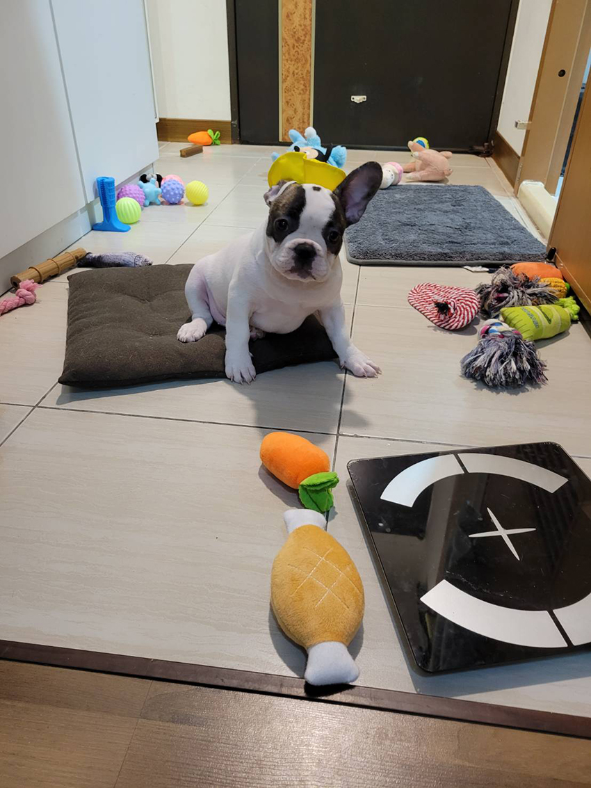
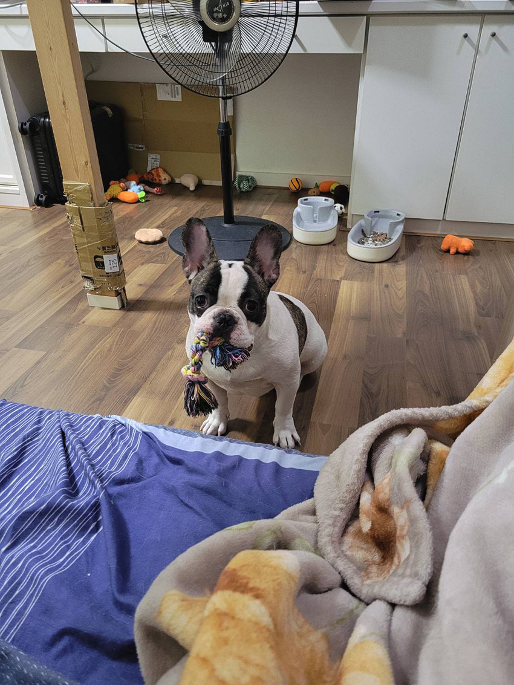
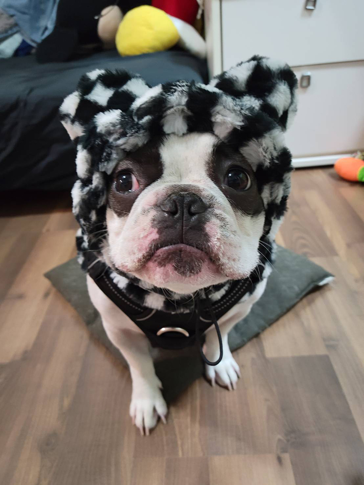

這是我心愛的法鬥——Alpha，或許你會更熟悉他的一些綽號：法哥、阿法、法法、肥肥、狗賊、狗精、還有阿美麻糬。他是我的乖兒子，每個綽號都代表著我們之間的獨特互動和情感連結。
|  |
有時候，我會叫他「狗賊」或「狗精」，這些稱號可是有來由的！每當有食物出現時，Alpha的反應可是靈敏無比，只要我一聲令下，他立刻服從命令，聰明又靈活。但平時呢？他卻經常裝死，對於我的呼喚充耳不聞，真是活脫脫一個裝傻的高手。這種反差萌，讓我對他又氣又愛。
至於「阿美麻糬」這個可愛的名子，則是因為每次我回家，Alpha總是用他那熱情的方式迎接我。我忍不住搓揉他那柔軟的肉肉，心中頓時浮現出「麻糬」這個詞。這個暱稱不知不覺間成為我們的小暗號。當我叫他「阿美麻糬」時，Alpha會立刻躺在地上，翻滾著讓我搓揉他的肚子，那模樣真是又可愛又討喜，讓我每次都忍不住露出微笑。
除了這些可愛的名字和互動，Alpha還是一隻不折不扣的「玩具富翁」。在我們家，Alpha的玩具多到五個A4紙箱都裝不下，這些玩具幾乎佔據了家裡的每一個角落。在眾多玩具中，Alpha對繩結玩具情有獨鍾。無論是玩耍還是休息，他總是叼著那個繩結，呆呆地看著我，彷彿是在向我炫耀：「看，我的玩具是不是很棒？」這樣的瞬間，總讓我忍不住笑出聲來，心裡滿滿的都是幸福感。
|  |
還有一個Alpha的趣事與大家分享。冬天的時候，我擔心這隻小狗會冷，特地給他買了一頂毛茸茸的小帽子。當我第一次給他戴上時，期待他會喜歡這個新配件。但讓我意想不到的是，Alpha戴上帽子後竟然露出了一副拜託快點拿掉的無奈表情。那模樣實在是太可愛了，讓我忍不住拿出手機，馬上捕捉下了這個搞笑又溫馨的瞬間。
|  |
Alpha的生活充滿了各種有趣和暖心的片刻。無論是他靈活聽令的「狗賊」一面，還是讓人無法抗拒的「阿美麻糬」，這隻法國鬥牛犬不僅帶給我無數歡笑，也讓我感受到無限的愛。希望你們也能感受到這份來自Alpha的快樂與溫馨！